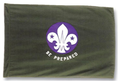

SCOUTS
 Scouts are encouraged to take part in a wide range of activities that helps them to find out about the world in which they live, encourages them to know their own abilities and the importance of keeping fit, and helps develop their creative talents. It also provides opportunities to explore their own values and personal attitudes.
Scouts are encouraged to take part in a wide range of activities that helps them to find out about the world in which they live, encourages them to know their own abilities and the importance of keeping fit, and helps develop their creative talents. It also provides opportunities to explore their own values and personal attitudes.
The Scout Promise
On my honour, I promise that I will do my best
To do my duty to God and to the Queen,
To help other people
And to keep the Scout Law
The Scout Law
- 1. A Scout is to be trusted.
- 2. A Scout is loyal.
- 3. A Scout is friendly and considerate.
- 4. A Scout belongs to the worldwide family of Scouts.
- 5. A Scout has courage in all difficulties.
- 6. A Scout makes good use of time and is careful of possessions and property.
- 7. A Scout has self-respect and respect for others.
